Marcador PINTOR
- 102 variantes
- Con ficha técnica
Marcadores de pintura al agua para papel, madera, cerámica, tela y más. Se venden sueltos y en sets.
Dibuja, diseña y colorea sobre superficies muy distintas. Los sets personalizables sirven como regalo corporativo.
Colores y variantes
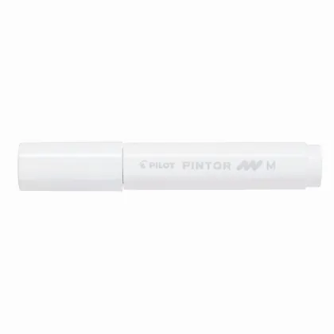
Medio BlancoSWPTMW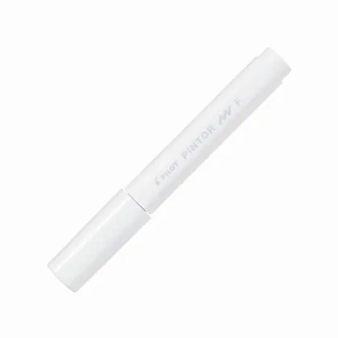
Fino BlancoSWPTFW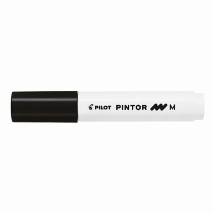
Medio NegroSWPTMB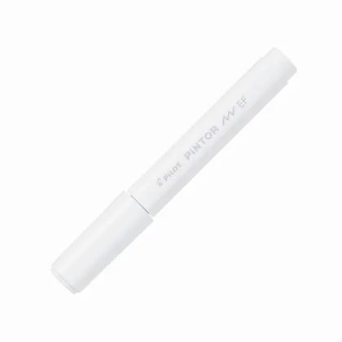
Extra Fino BlancoSWPTEFW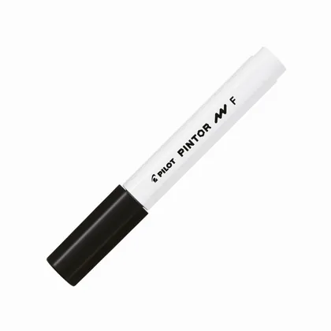
Fino NegroSWPTFB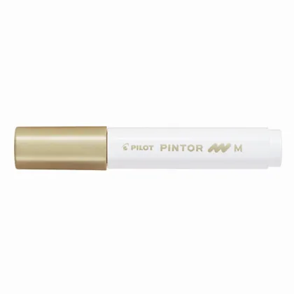
Medio DoradoSWPTMGD- Extra Fino Negro
SWPTEFB - Fino Dorado
SWPTFGD 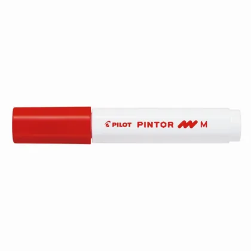
Medio RojoSWPTMR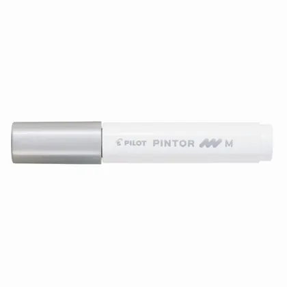
Medio PlateadoSWPTMS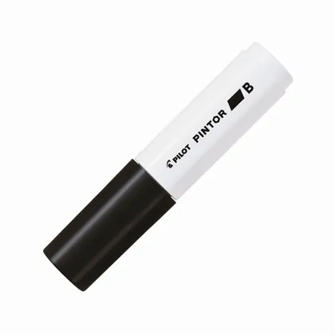
Biselado NegroSWPTBB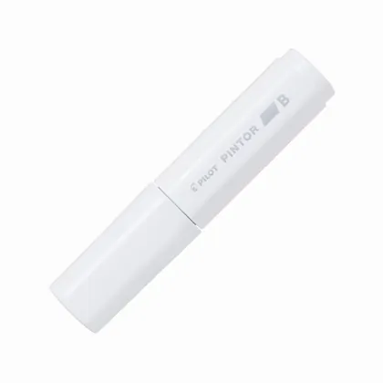
Biselado BlancoSWPTBW- Fino Rojo
SWPTFR 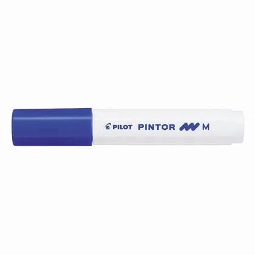
Medio AzulSWPTML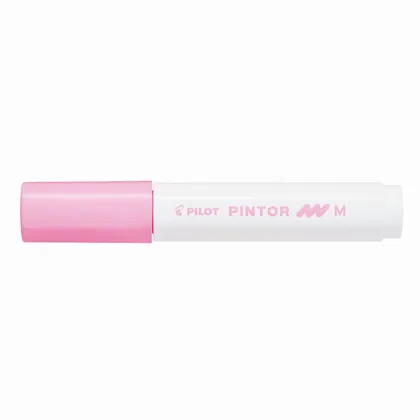
Medio RosadoSWPTMP- Fino Plateado
SWPTFS 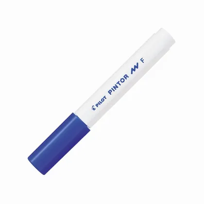
Fino AzulSWPTFL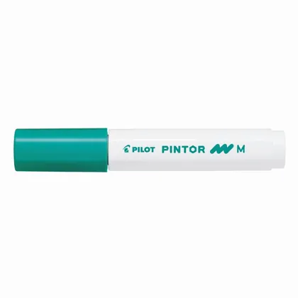
Medio VerdeSWPTMG- Fino Violeta
SWPTFV 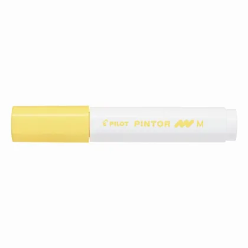
Medio AmarilloSWPTMY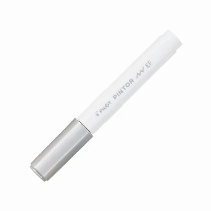
Extra Fino PlateadoSWPTEFS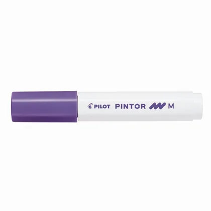
Medio VioletaSWPTMV- Extra Fino Dorado
SWPTEFGD - Fino Verde
SWPTFG 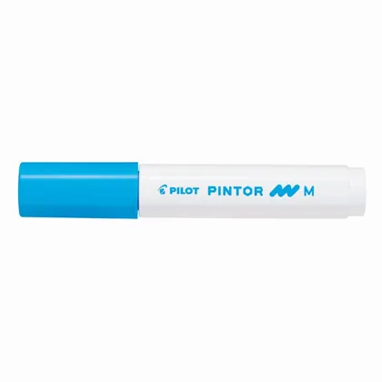
Medio TurquesaSWPTMLB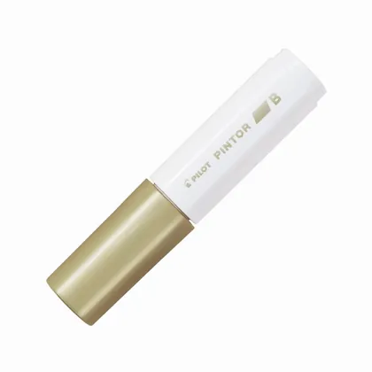
Biselado DoradoSWPTBGD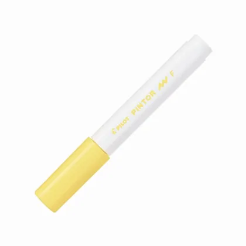
Fino AmarilloSWPTFY- Fino Turquesa
SWPTFLB 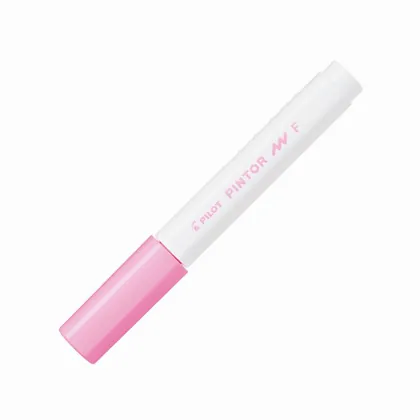
Fino RosadoSWPTFP- Medio Naranjo
SWPTMO 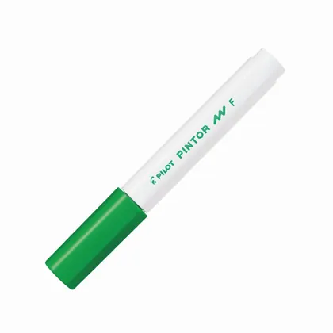
Fino Verde ClaroSWPTFLG- Extra Fino Rojo
SWPTEFR - Fino Rosado Metalico
SWPTFMP 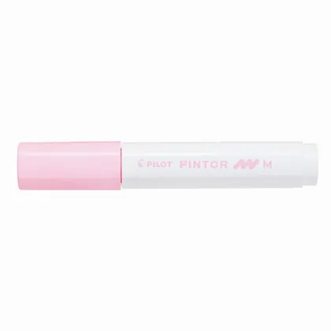
Medio Rosado PastelSWPTMPP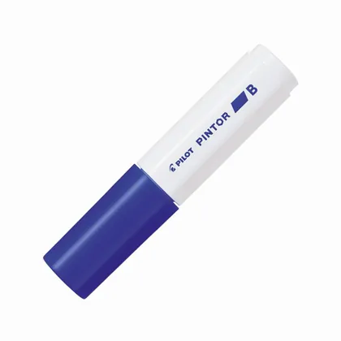
Biselado AzulSWPTBL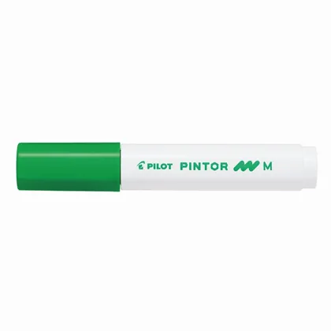
Medio Verde ClaroSWPTMLG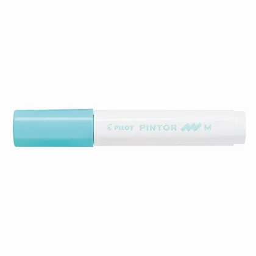
Medio Verde PastelSWPTMPG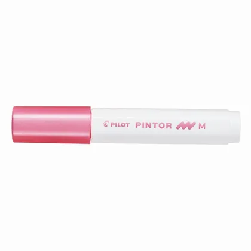
Medio Rosado MetalicoSWPTMMP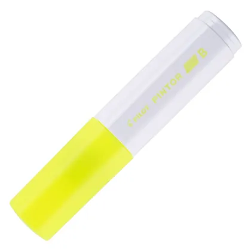
Biselado Amarillo NeonSWPTBNY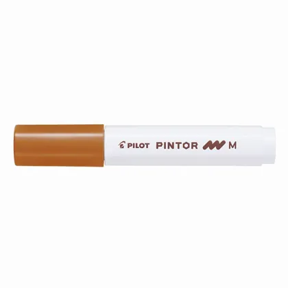
Medio CaféSWPTMBN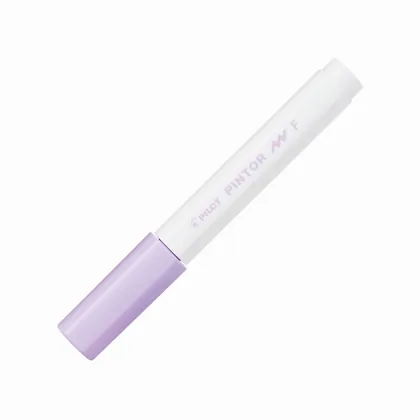
Fino Violeta PastelSWPTFPV- Fino Verde Pastel
SWPTFPG - Extra Fino Amarillo
SWPTEFY 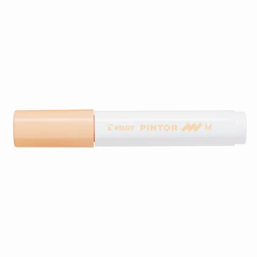
Medio Naranjo PálidoSWPTMPO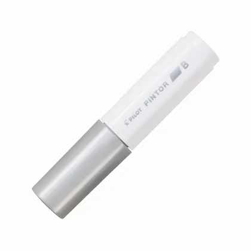
Biselado PlateadoSWPTBS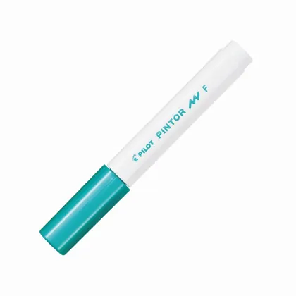
Fino Verde MetalicoSWPTFMG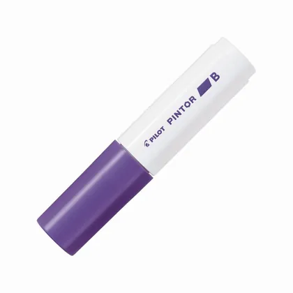
Biselado VioletaSWPTBV- Biselado Rojo
SWPTBR 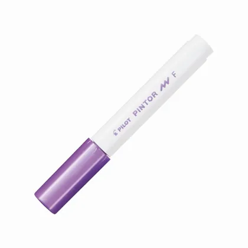
Fino Violeta MetalicoSWPTFMV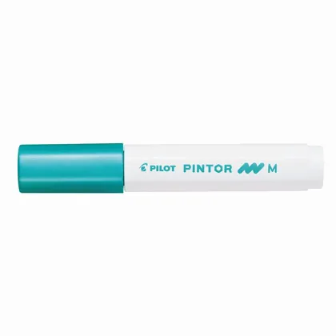
Medio Verde MetalicoSWPTMMG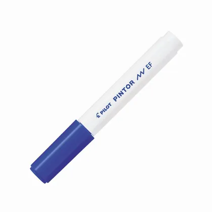
Extra Fino AzulSWPTEFL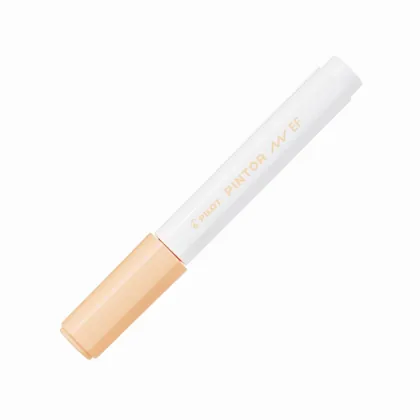
Extra Fino Naranjo PálidoSWPTEFPO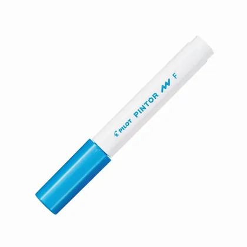
Fino Azul MetalicoSWPTFML- Fino Naranjo Pálido
SWPTFPO 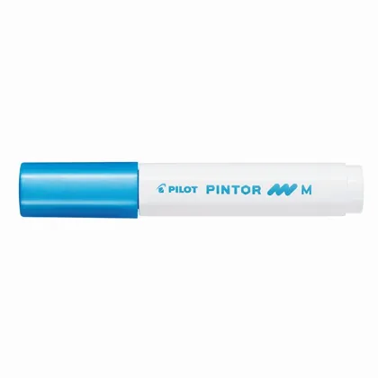
Medio Azul MetalicoSWPTMML- Fino Rosado Pastel
SWPTFPP - Fino Amarillo Pastel
SWPTFPY - Extra Fino Turquesa
SWPTEFLB 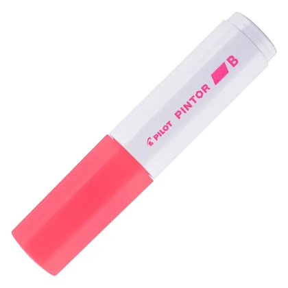
Biselado Rojo NeonSWPTBNR- Biselado Turquesa
SWPTBLB 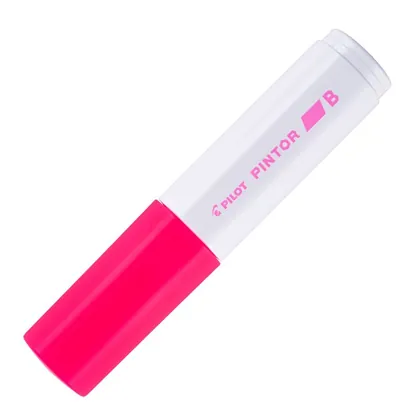
Biselado Rosado NeonSWPTBNP- Medio Azul Pastel
SWPTMPL 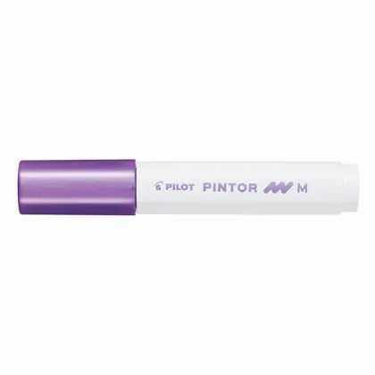
Medio Violeta MetalicoSWPTMMV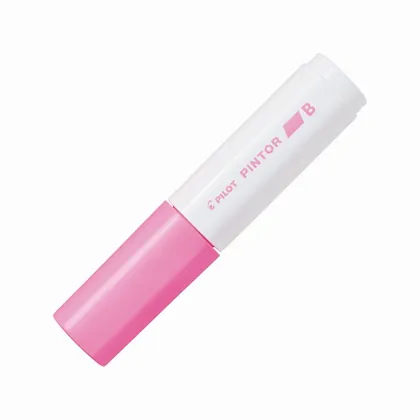
Biselado RosadoSWPTBP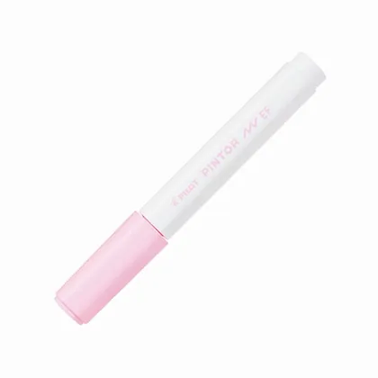
Extra Fino Rosado PastelSWPTEFPP- Extra Fino Violeta Pastel
SWPTEFPV 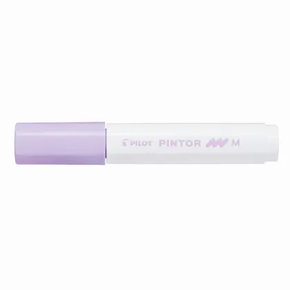
Medio Violeta PastelSWPTMPV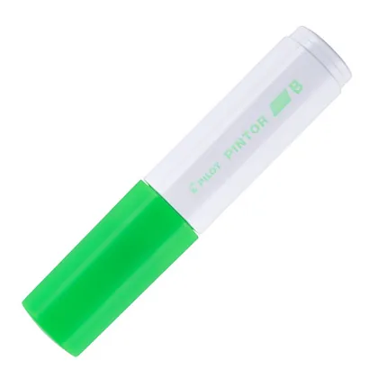
Biselado Verde NeonSWPTBNG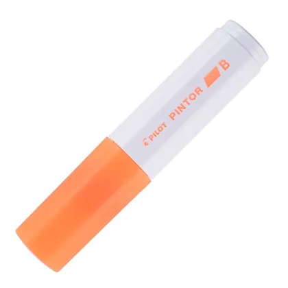
Biselado Naranjo NeonSWPTBNO- Biselado Verde Pastel
SWPTBPG 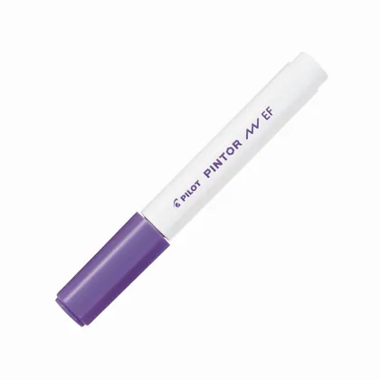
Extra Fino VioletaSWPTEFV- Fino Azul Pastel
SWPTFPL 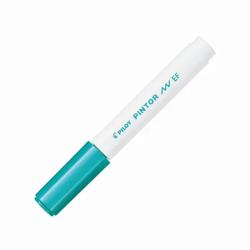
Extra Fino Verde MetalicoSWPTEFMG- Biselado Azul Pastel
SWPTBPL - Extra Fino Verde Pastel
SWPTEFPG - Extra Fino Rosado Metalico
SWPTEFMP - Extra Fino Azul Pastel
SWPTEFPL - Extra Fino Rosado
SWPTEFP - Biselado Café
SWPTBBN - Biselado Violeta Pastel
SWPTBPV - Biselado Amarillo Pastel
SWPTBPY - Extra Fino Verde Claro
SWPTEFLG - Medio Amarillo Pastel
SWPTMPY - Fino Café
SWPTFBN - Biselado Verde Metalico
SWPTBMG - Biselado Azul Metalico
SWPTBML - Biselado Rosado Pastel
SWPTBPP - Extra Fino Azul Metalico
SWPTEFML - Extra Fino Violeta Metalico
SWPTEFMV - Biselado Naranjo Damasco Neon
SWPTBNAO - Biselado Naranjo Pálido
SWPTBPO - Biselado Rosado Metalico
SWPTBMP - Biselado Violeta Metalico
SWPTBMV - Fino Naranjo
SWPTFO - Extra Fino Café
SWPTEFBN - Extra Fino Amarillo Pastel
SWPTEFPY - Biselado Naranjo
SWPTBO - Biselado Verde Claro
SWPTBLG - Biselado Amarillo
SWPTBY - Extra Fino Verde
SWPTEFG - Biselado Verde
SWPTBG - Extra Fino Naranjo
SWPTEFO